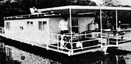
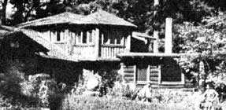

Labor Day marks the end of the traditional tourist season and the beginning of a period when many travel bargains become available! (See the article on page 72 for some examples of the advantages of off-month touring.) And, of course, in addition to such seasonal savings opportunities, there are special offerings-available year round-that can help you create a delightful budget vacation.
A SEPTEMBER "SENIOR CLASS"
Tennessee, for example, has recently launched a month-long promotion aimed at attracting travelers 55 years of age and older. Almost every tourist business in the state is taking part, offering September specials (to members of the "select" age group only) that include discount admission prices to various attractions . . . free coffee or continental breakfasts at many restaurants . . . a waiver of cover charges at some of Nashville's nightclubs . . . and free bait at selected Tennessee fishing lake resorts! Campgrounds, auto rental companies, houseboat rental operations, and theme parks will also participate.
Furthermore, a special Greyhound "Senior Class Pass" will permit unlimited bus travel within the Volunteer State during the entire month (for those 55 and older). And Ozark Airlines offers a 50% discount fare-for persons over 60 years old-on flights to Nashville from Tampa, Florida.
Full details, and a list of participating businesses, can be picked up at any of the eight Tennessee Welcome Centers located at interstate highway entrances . . . or you can obtain information by writing to The Senior Class, Tennessee Department of Tourist Development, Dept. TMEN, P.O. Box 23170, Nashville, Tennessee 37202.
HOSPITABLE HOSTELS
Probably no organization is so misnamed as the American Youth Hostel . . . because-this network of moneysaving accommodations ($3.00 to $5.00 a night) is open to travelers of any age. To take advantage of the comfortable and economical facilities, one need only show a membership card (they can be obtained from American Youth Hostels, Inc., National Office, Dept. TMEN, Delaplane, Virginia 22025). The cost is $14 for most adults and $7.00 for those under 18, or over 60, years old. (Further savings can be realized if you buy a three-year membership, a family membership, or a lifetime membership.)
While there are currently 240 youth hostels operating in the U.S.-ranging from a 65-bed former lifesaving station in Nantucket, Massachusetts to a 150-bed converted military facility in San Francisco-the American Youth Hostel Act of 1980 (which has passed the House, but is currently stalled in the Senate) will, if it becomes law, expand the system to create a national chain of clean, inexpensive lodgings . .. accessible by foot, bicycle, and public transportation.
A TROPICAL TREAT
At Puerto Rico's centros vacacionales (vacation centers)-the equivalent of U.S. national parks-you can wake up in your guest cottage to the sounds of the sea, amble out to play a few sets of tennis, and then enjoy a dip in the pool or a run on the beach . . . all for $12 to $15 a night for the entire family!
The accommodations consist of prefabricated cabins with two bedrooms-one with a double bed and the other with two double-deckers-that are capable of sleeping six people. Each cabin also has a kitchen-living area with an electric stove and refrigerator, and a shower-equipped bathroom. (Linen and cooking utensils can be rented for a small fee.) All the centros have their own markets, too, where food can be purchased at modest prices ... and nearby restaurants that offer authentic Puerto Rican cuisine.
There are three vacation centers in operation today, and they're located in some of the island's loveliest spots: Boqueron, Maricao, and Humacao. (A fourth facility in Arroyo, on the southeastern coastline should be ready by the end of the year, and another on Vieques Island will open within two years.)
To obtain more information, write to the Puerto Rico Tourism Company, Dept. TMEN, 1290 Avenue of the Americas, New York, New York 10019.
EDITOR'S NOTE: Don't forget, this is your travel column, too. Let us-and MOTHER's other readers-know of any special vacation bargains that you've run across. Send your "worldly" tips (including current costs) to Getting There, THE Mother Earth News(restricted), P.O. Box 70, Hendersonville, North Carolina 28791.
|
There's fine fishing found in Tennessee. |
 Each hostel has its own unique ambiance. |
 |